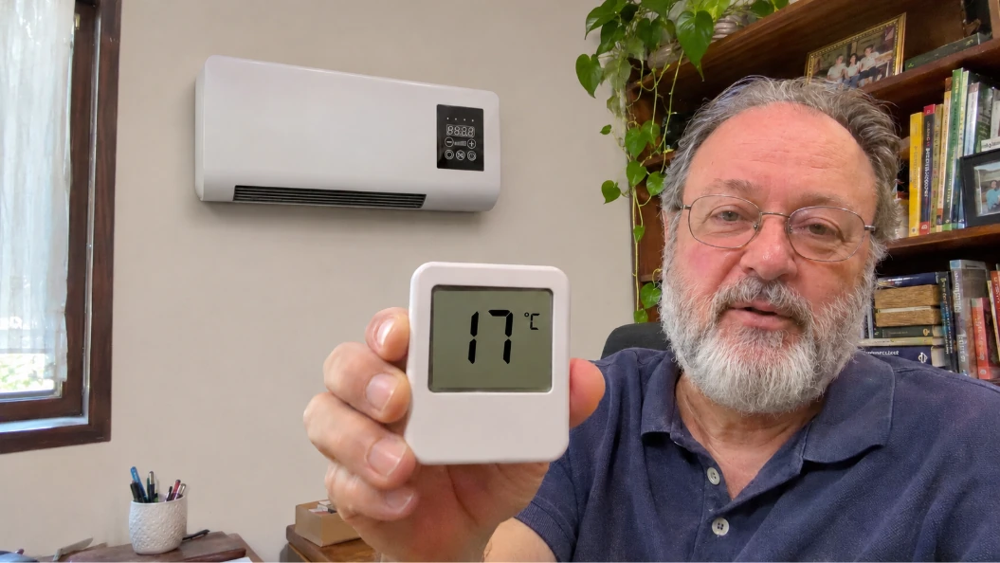
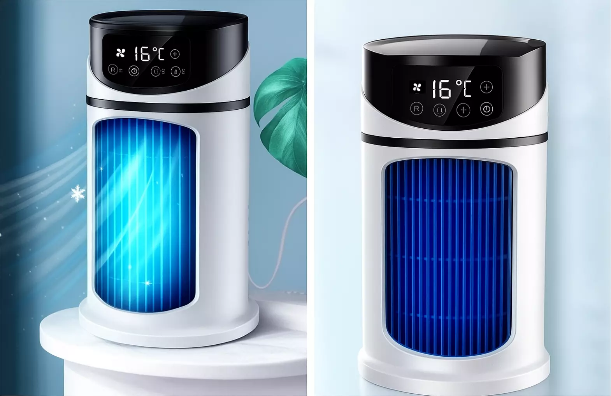
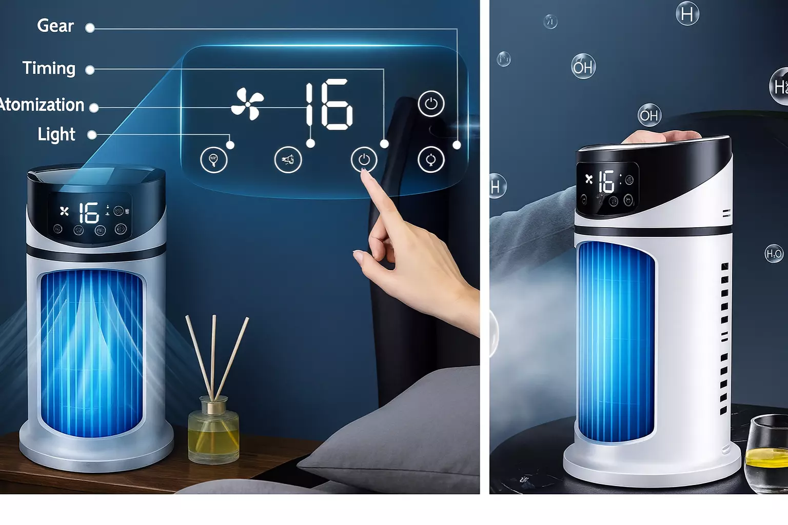
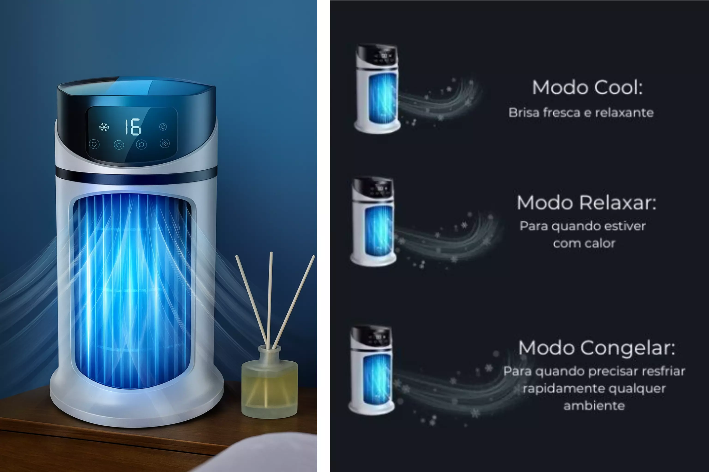

RESUMO: Você sabia que existe um novo modelo de Ar Condicionado que pode resfriar seu quarto em apenas 3 MINUTOS!? Conheça o novo AeroPlus, o aparelho de alta potência que já ajudou milhares de pessoas a vencer o calor enquanto reduzia drasticamente o valor da conta de luz. Entenda agora de uma vez por todas como ele funciona…
AS TRÊS MAIORES EMPRESAS QUE DOMINAM A INDÚSTRIA DE AR CONDICIONADO HÁ ANOS ESTÃO EXPLORANDO SEUS CLIENTES, COBRANDO FORTUNAS EM SEUS PRODUTOS!
Exatamente isso, mas o jogo virou! Em um país que sofre com altas temperaturas e ondas de calor absurdas como o Brasil, investir em um ar-condicionado não é apenas um sonho, e sim uma necessidade!
É por isso que uma brilhante Startup foi atrás de mudar essa situação!
A missão foi oferecer um produto superior, dotado de alta tecnologia, que consome 90% menos energia e por um valor justo e honesto a todo brasileiro!
A AeroPlus, ganhou reconhecimento mundial por descobrir uma maneira de virar de cabeça para baixo as grandes empresas de ar-condicionado que exploravam seus clientes!
O design portátil não requer instalação (Sem Obras, Sem Tubos). Além de ser mais barato, ele resfria qualquer ambiente em poucos minutos. Muitos concordam que é um novo marco na indústria de ar condicionados!
Já não é novidade que o Brasil é um país EXTREMAMENTE QUENTE, mas atenção, as previsões meteorológicas apontam que este verão de 2026 será o mais quente em dezenas de anos!
E é exatamente por isso que esse novo ar condicionado está se tornando o maior destaque tecnológico de 2026.

O modelo AeroPlus foi idealizado por uma equipe com grandes nomes dentro da engenharia especializada em refrigeração do ar.
A ideia principal era desenvolver um Ar Condicionado compacto, portátil e silencioso, com baixo custo de aquisição e manutenção, adequado para qualquer ambiente.
O novo AeroPlus é uma obra brilhante da engenharia, não tem custos com instalação e fornece ar fresco rapidamente em seu quarto, cozinha , escritório e até mesmo em sua área de lazer.
Com um compressor interno de última geração, ele pode reciclar energia enquanto resfria, proporcionando alta eficiência na sua conta de luz. Este modelo não possui compartimento para abastecimento com água, pois o resfriamento é feito pelo compressor.
Tudo o que um ar condicionado tradicional pode fazer: resfriar qualquer ambiente, regular a umidade, filtrar partículas de poeira do ar... Ele pode resfriar rápidamente ambientes para temperaturas entre 16°C e 28°C... Ele resfria o ar que entra e então bombeia o ar frio para o outro lado. É incrível o resultado disso!
Comparado a um ar condicionado tradicional, ele é mais eficiente, menor, portátil, econômico - e resfria o ar muito mais rápido!
Mas isso não é só! O AeroPlus é único por ser 90% mais econômico em relação a gasto de energia se comparado a um ar tradicional, além de ser mais barato e mais leve, o que facilita o transporte para diversos lugares.

Seu design moderno garante uma operação quase silenciosa, perfeita para quem tem sono leve ou para quem quer um ambiente de trabalho fresco e silencioso.
O AeroPlus é simples de usar e pode ser facilmente manuseado por qualquer pessoa!
1. Coloque onde quiser
2. Pressione o botão liga/desliga
3. Ajuste a temperatura que você gosta e aproveite esta maravilha de alta tecnologia e alta eficiência!

Você é capaz de resfriar qualquer sala em poucos minutos, pois existe nas opções de 9.000 e 18.000 BTUs.
Seu tamanho é pequeno se comparado a um Ar Condicionado tradicional, mas por causa de sua eficiência, faz mais do que apenas resfriar o ambiente.
Compacto e fácil de usar! Ar Condicionado três em um: resfria, umidifica e ventila. Ideal para quem sofre de alergias!
Pressione o botão para definir os modos conforme necessário:
1. ❄️ Modo Cool - uma brisa fresca e relaxante
2. ❄️ Modo Relaxar - para quando você estiver com calor
3. ❄️ Modo Congelar - resfria o ambiente instantaneamente. Você pode resfriar facilmente qualquer ambiente em apenas alguns minutos.
Você pode diminuir rapidamente a temperatura ao seu redor em minutos

Mais do que você pode imaginar!
E não acabou!
Os Ar Condicionados tradicionais são volumosos, barulhentos e extremamente caros para se instalar e principlamente consomem muita energia. Ao contrário deles, o AeroPlus pode ir aonde você for, proporcionando uma brisa calma e refrescante.
Uma coisa é certa, depois de conhecer o AeroPlus, você nunca mais vai querer viver sem ele!
P: O AeroPlus requer alguma instalação?
“Não, é só tirar da caixa e começar a usar, é muito simples. Você poderá resfriar qualquer espaço em pouquíssimos segundos.”
P: O AeroPlus é seguro para usar durante o sono?
“Com toda certeza. O aparelho trabalha de forma super silenciosa para zero perturbação.”
Observando os recursos do AeroPlus, não seria uma surpresa ver um preço de até R$ 1500. O que ainda seria baixo, comparado a maioria dos ar condicionados tradicionais (eles costumam custar mais de R$ 2.000)
O preço de venda dele é R$ 1.195,80 , portanto, muito inferior ao que esperávamos.
Mas, sabe o que é melhor ainda do que pagar um preço baixo?
O desconto de 50% para que você possa encomendar o seu por apenas R$ 697,90 e com frete grátis para todo Brasil! (Promoção válida até Quinta-feira, 19 de Novembro de 2026.)
Nesse calor, o preço é pequeno quando se fala em um Ar Condicionado potente que resfria uma sala de até 25 metros quadrados.
Você sabia que os fabricantes de ar condicionados de grandes empresas gastam fortunas em publicidade e reconhecimento da marca? Tudo é pago pelo cliente no final.
É por isso que eles mantêm seus preços tão altos.
O AeroPlus, por outro lado, prefere investir mais na qualidade, de modo que seus fabricantes não fazem propaganda na televisão.
Clique aqui para ver se a promoção do AeroPlus ainda está disponivel.
Absolutamente 100% SIM!!
O Ar condicionado AeroPlus valia a pena mesmo antes do desconto, e com o frete grátis de bônus não há literalmente mais nada que precise ser discutido.
Se você quer se refrescar, dormir profundamente com suas alergias ou purificar o ar de todos os vírus desagradáveis que circulam hoje em dia, este dispositivo pode fazer tudo e muito mais.
O AeroPlus é como um ar condicionado caro de R$ 1600,00. Ele possui os recursos mais recentes de um Ar condicionado 2026, mas custa muito menos.
Se ainda estiver à venda por menos de R$ 600,00 - não hesite e compre um antes que esgote.
Resumindo: Nós AMAMOS! Você não encontrará um ar condicionado melhor por um preço tão baixo.
Prós:
Muito fácil de usar
Ultra portátil e leve
Ideal para sala de refrigeração até 20 metros quadrados
Eficiente em Energia
Modo umidificador e aromaterapia
Purifica o ar e filtra partículas como poeira e alérgenos
Contras:
Agora que você conhece este novo produto incrível, e se ainda estiver em estoque, veja como obter um:
Recomendamos encomendar um AeroPlus original no site do fornecedor clicando aqui.
Desfrute de ar fresco e purificado onde quiser e a qualquer momento
ATUALIZAÇÃO: A empresa está atualmente realizando a Liquidação Especial. Você ganha 50% de desconto se comprar até HOJE, somente no site oficial. Não perca a chance de melhorar sua vida a um preço imbatível!
© 2026 Todos os direitos reservados.